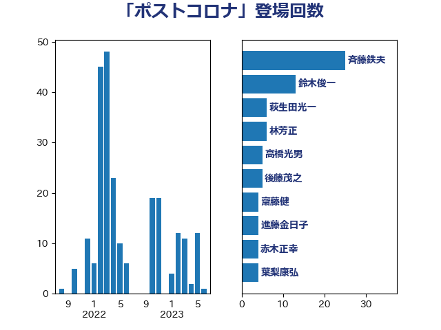

単語「ポストコロナ」

| 斉藤鉄夫 | 公明党 | 25 回 |
| 鈴木俊一 | 自由民主党 | 13 回 |
| 萩生田光一 | 自由民主党 | 6 回 |
| 林芳正 | 自由民主党 | 6 回 |
| 高橋光男 | 公明党 | 5 回 |
| 後藤茂之 | 自由民主党 | 5 回 |
| 齋藤健 | 自由民主党 | 4 回 |
| 進藤金日子 | 自由民主党 | 4 回 |
| 赤木正幸 | 日本維新の会 | 4 回 |
| 葉梨康弘 | 自由民主党 | 4 回 |
| 神田潤一 | 自由民主党 | 4 回 |
| 岸田文雄 | 自由民主党 | 4 回 |
| 金子恭之 | 自由民主党 | 3 回 |
| 渡辺猛之 | 自由民主党 | 3 回 |
| 河西宏一 | 公明党 | 3 回 |
| 野田国義 | 立憲民主党 | 2 回 |
| 辻元清美 | 立憲民主党 | 2 回 |
| 越智隆雄 | 自由民主党 | 2 回 |
| 若林健太 | 自由民主党 | 2 回 |
| 福島伸享 | 無所属 | 2 回 |
| 浜野喜史 | 国民民主党 | 2 回 |
| 津島淳 | 自由民主党 | 2 回 |
| 池田佳隆 | 自由民主党 | 2 回 |
| 永岡桂子 | 自由民主党 | 2 回 |
| 松本剛明 | 自由民主党 | 2 回 |
| 掘井健智 | 日本維新の会 | 2 回 |
| 川合孝典 | 国民民主党 | 2 回 |
| 山際大志郎 | 自由民主党 | 2 回 |
| 山本順三 | 自由民主党 | 2 回 |
| 山本剛正 | 日本維新の会 | 2 回 |
| 山崎正恭 | 公明党 | 2 回 |
| 山岡達丸 | 立憲民主党 | 2 回 |
| 堀井巌 | 自由民主党 | 2 回 |
| 古川禎久 | 自由民主党 | 2 回 |
| 勝目康 | 自由民主党 | 2 回 |
| 加藤勝信 | 自由民主党 | 2 回 |
| 世耕弘成 | 自由民主党 | 2 回 |
| 上野通子 | 自由民主党 | 2 回 |
| 高橋千鶴子 | 日本共産党 | 1 回 |
| 高木かおり | 日本維新の会 | 1 回 |
| 青島健太 | 日本維新の会 | 1 回 |
| 青山周平 | 自由民主党 | 1 回 |
| 阿部弘樹 | 日本維新の会 | 1 回 |
| 阿部司 | 日本維新の会 | 1 回 |
| 野田聖子 | 自由民主党 | 1 回 |
| 野田佳彦 | 立憲民主党 | 1 回 |
| 里見隆治 | 公明党 | 1 回 |
| 赤澤亮正 | 自由民主党 | 1 回 |
| 谷川とむ | 自由民主党 | 1 回 |
| 西田昌司 | 自由民主党 | 1 回 |
| 西村康稔 | 自由民主党 | 1 回 |
| 西岡秀子 | 国民民主党 | 1 回 |
| 藤川政人 | 自由民主党 | 1 回 |
| 藤岡隆雄 | 立憲民主党 | 1 回 |
| 落合貴之 | 立憲民主党 | 1 回 |
| 若松謙維 | 公明党 | 1 回 |
| 美延映夫 | 日本維新の会 | 1 回 |
| 稲津久 | 公明党 | 1 回 |
| 福田昭夫 | 立憲民主党 | 1 回 |
| 石田昌宏 | 自由民主党 | 1 回 |
| 石川博崇 | 公明党 | 1 回 |
| 石井浩郎 | 自由民主党 | 1 回 |
| 石井正弘 | 自由民主党 | 1 回 |
| 石井拓 | 自由民主党 | 1 回 |
| 田畑裕明 | 自由民主党 | 1 回 |
| 田村まみ | 国民民主党 | 1 回 |
| 玄葉光一郎 | 立憲民主党 | 1 回 |
| 猪口邦子 | 自由民主党 | 1 回 |
| 沢田良 | 日本維新の会 | 1 回 |
| 池下卓 | 日本維新の会 | 1 回 |
| 横山信一 | 公明党 | 1 回 |
| 柳本顕 | 自由民主党 | 1 回 |
| 柳ヶ瀬裕文 | 日本維新の会 | 1 回 |
| 柘植芳文 | 自由民主党 | 1 回 |
| 末松信介 | 自由民主党 | 1 回 |
| 平山佐知子 | 無所属 | 1 回 |
| 市村浩一郎 | 日本維新の会 | 1 回 |
| 岩谷良平 | 日本維新の会 | 1 回 |
| 山田美樹 | 自由民主党 | 1 回 |
| 山本博司 | 公明党 | 1 回 |
| 山口那津男 | 公明党 | 1 回 |
| 室井邦彦 | 日本維新の会 | 1 回 |
| 安江伸夫 | 公明党 | 1 回 |
| 守島正 | 日本維新の会 | 1 回 |
| 吉井章 | 自由民主党 | 1 回 |
| 古屋範子 | 公明党 | 1 回 |
| 加田裕之 | 自由民主党 | 1 回 |
| 前原誠司 | 国民民主党 | 1 回 |
| 住吉寛紀 | 日本維新の会 | 1 回 |
| 今枝宗一郎 | 自由民主党 | 1 回 |
| 中川正春 | 立憲民主党 | 1 回 |
| 中川宏昌 | 公明党 | 1 回 |
| 中島克仁 | 立憲民主党 | 1 回 |
| 中司宏 | 日本維新の会 | 1 回 |